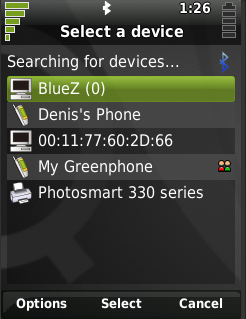

|
Home · All Namespaces · All Classes · Grouped Classes · Modules · Functions | |
The QBluetoothRemoteDeviceDialog class allows the user to perform a bluetooth device discovery and select a particular device. More...
#include <QBluetoothRemoteDeviceDialog>
Inherits QDialog.
The QBluetoothRemoteDeviceDialog class allows the user to perform a bluetooth device discovery and select a particular device.
When a remote device dialog is first displayed, it automatically starts a device discovery in order to display remote devices found in the vicinity.
The setFilter() function can be used to ensure that the device dialog only displays certain types of devices. Also, the setValidationProfiles() function can be used to ensure that the user can only activate a device if offers a particular service profile. For example, here is a dialog that will only display phone devices, and only allows the user to select a device if the device offers a service with the Object Push Profile:
QSet<QBluetooth::DeviceMajor> deviceMajors;
deviceMajors.insert(QBluetooth::Phone);
QBluetoothRemoteDeviceDialogFilter filter;
filter.setAcceptedDeviceMajors(deviceMajors);
QSet<QBluetooth::SDPProfile> profiles;
profiles.insert(QBluetooth::ObjectPushProfile);
QBluetoothRemoteDeviceDialog *dialog = new QBluetoothRemoteDeviceDialog;
dialog->setFilter(&filter);
dialog->setValidationProfiles(profiles);
if (QtopiaApplication::execDialog(dialog) == QDialog::Accepted) {
QBluetoothAddress selectedDevice = dialog->selectedDevice();
}
This will produce a dialog similar to this:

The static function getRemoteDevice() is the easiest way to run a device dialog. It runs a modal device selection dialog, then returns the address of the device that was activated by the user. Using getRemoteDevice(), the last section of the above example code could be rewritten thus:
QBluetoothAddress selectedDevice =
QBluetoothRemoteDeviceDialog::getRemoteDevice(0, profiles, &filter);
You can also run the dialog without using getRemoteDevice() or QtopiaApplication::execDialog(). When the user activates a device and the device has the required profiles as set by setValidationProfiles(), the accepted() signal is emitted, and the activated device can be found by calling selectedDevice(). If the dialog is canceled, the rejected() signal is emitted.
QBluetoothRemoteDeviceDialog also allows custom menu actions to be added through QWidget::addAction(). Any added actions will be enabled when a device is selected, and disabled when no devices are selected. They are also disabled during device discoveries.
See also QBluetoothRemoteDeviceDialogFilter.
Constructs a QBluetoothRemoteDeviceDialog with the given parent widget parent and the window flags flags.
Constructs a QBluetoothRemoteDeviceDialog with the given parent widget parent and the window flags flags. local will be used to query the local bluetooth device. If local is 0, the default device will be used.
Destroys the device dialog.
Adds filter to the group of filters to be used for this dialog.
This dialog takes ownership of the filter.
See also setFilterSelectionEnabled().
Removes and deletes all filters that have been added to this dialog.
See also removeFilter().
Returns the current filter.
See also setCurrentFilter().
Returns whether the dialog enables the end user to change between the added filters.
See also setFilterSelectionEnabled().
Shows a remote device dialog with the validation profiles profiles, the device filter filter, and the parent parent. If filter is 0, the dialog will not filter the device display.
Returns the address of the remote device that was activated, or an invalid address if the dialog was cancelled.
See also setValidationProfiles() and QBluetoothRemoteDeviceDialogFilter.
Removes filter from the group of filters for this dialog.
Ownership of the filter is passed to the caller.
See also addFilter() and clearFilters().
Returns the address of the currently selected device.
Note that a dialog's validation profiles (see setValidationProfiles()) are only applied when a device is activated, and not when they are merely selected. Therefore, if any validation profiles have been set, the programmer should be aware that the device returned by this method may not have been validated against these profiles, if this function is called before the user has activated a device in the dialog.
See also setValidationProfiles().
Sets filter to be the current filter. It must have been already added using addFilter().
See also currentFilter().
If enabled is true, the dialog enables the end user to change between filters that have been added to this display. This is useful, for example, if the current filter is too restrictive and has excluded the device that the user wants to select; in this case, the user can change to a less restrictive filter, and locate the desired device.
An "All" filter is automatically added that allows the user to view all discovered devices.
By default, filter selection is enabled.
See also filterSelectionEnabled().
Set the validation SDP profiles to profiles.
When this is set, a device can only be chosen if it has at least one service that matches one or more of the given profiles.
For example, a dialog like this will only allow the user to select a device if it has a service with the OBEX Object Push profile:
QSet<QBluetooth::SDPProfile> profiles;
profiles.insert(QBluetooth::ObjectPushProfile);
QBluetoothRemoteDeviceDialog dialog;
dialog.setValidationProfiles(profiles);
(If the user chooses a device that does not have the Object Push Profile, the dialog will not be closed, and a message box will be displayed informing the user that the selected device does not have the necessary services.)
See also validationProfiles().
Returns the SDP profiles that are used to validate an activated device.
See also setValidationProfiles().
| Copyright © 2009 Trolltech | Trademarks | Qt Extended 4.4.3 |